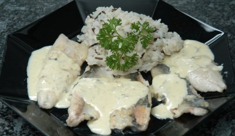

| Zutaten für 4 Personen: | |
| 600 g | frische Felchenfilets |
| 40 g | Butter |
| 6 dl | Räuschling |
| 6 dl | Rahm |
| Kartoffeln oder Reis | |
Die Felchenfilets salzen, in Mehl wenden und in Butter leicht dünsten.
Die Filets mit dem Wein ablöschen und drei Minuten lang kochen lassen.
Auf warmer Platte anrichten und warm stellen.
Den Rahm in die Pfanne geben und mit Salz und Pfeffer aus der Mühle gewürzt bis zur gewünschten Dicke einkochen lassen.
Die Sauce über die Filets geben und diese mit Salzkartoffeln oder Reis servieren.
Weinempfehlung: Räuschling oder Riesling x Silvaner vom Zürichsee.
Broschüre Zürcher Wein und die Kultur dazu; Restaurant Seehof, Uerikon, Familie H. Hotz.
Am 15.7.2007 zubereitet. Schnell zubereitet und schmackhaft. Schmeckt ausgezeichnet. RE
@LINKBACK_TAG@ @WAKELOCK@